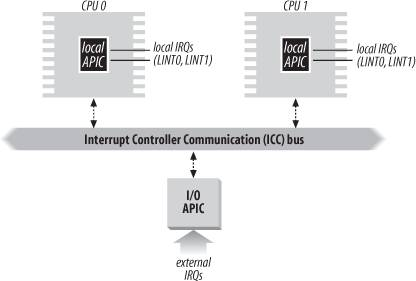
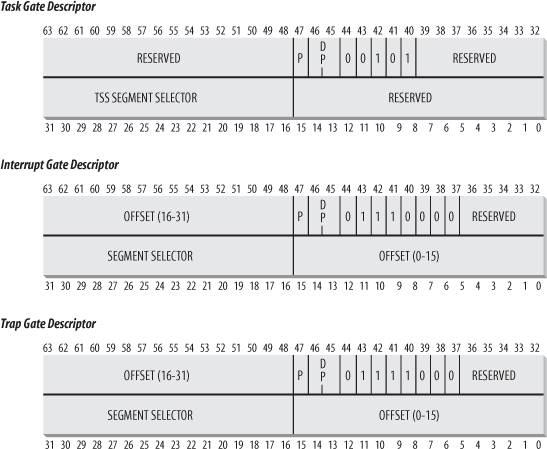

{% include JB/setup %}
{% raw %}
<div>


<a name="understandlk-CHP-4-SECT-2"></a>
<h3 class="docSection1Title">4.2. Interrupts and Exceptions</h3><a name="IDX-CHP-4-1013"></a>
<a name="IDX-CHP-4-1014"></a>
<a name="IDX-CHP-4-1015"></a>
<a name="IDX-CHP-4-1016"></a>
<a name="IDX-CHP-4-1017"></a>
<a name="IDX-CHP-4-1018"></a>
<p class="docText1">The Intel documentation classifies interrupts and exceptions as follows:</p>
<ul class="calibre11"><li class="calibre12"><p class="docText1">Interrupts:</p><a name="IDX-CHP-4-1019"></a><a name="IDX-CHP-4-1020"></a><dl class="docList2"><dt class="calibre7"><br class="calibre7"/><p class="calibre14"><span class="docPubcolor"><span class="docEmphasis">Maskable interrupts</span></span></p></dt>
<dd class="calibre20"><p class="docList">All Interrupt Requests (IRQs) issued by I/O devices give rise to maskable interrupts<a name="IDX-CHP-4-1019"></a> 
. A maskable interrupt can be in two states: masked or unmasked; a masked interrupt is ignored by the control unit as long as it remains masked.</p></dd><dt class="calibre7"><br class="calibre7"/><p class="calibre14"><span class="docPubcolor"><span class="docEmphasis">Nonmaskable interrupts</span></span></p></dt>
<dd class="calibre20"><p class="docList">Only a few critical events (such as hardware failures) give rise to nonmaskable interrupts<a name="IDX-CHP-4-1020"></a> 
. Nonmaskable interrupts are always recognized by the CPU.</p></dd></dl></li><li class="calibre12"><p class="docText1">Exceptions:</p><a name="IDX-CHP-4-1021"></a><a name="IDX-CHP-4-1022"></a><a name="IDX-CHP-4-1023"></a><a name="IDX-CHP-4-1024"></a><a name="IDX-CHP-4-1025"></a><dl class="docList2"><dt class="calibre7"><br class="calibre7"/><p class="calibre14"><span class="docPubcolor"><span class="docEmphasis">Processor-detected exceptions</span></span></p></dt>
<dd class="calibre20"><p class="docList">Generated when the CPU detects an anomalous condition while executing an instruction. These are further divided into three groups, depending on the value of the <tt class="calibre25">eip</tt> register that is saved on the Kernel Mode stack when the CPU control unit raises the exception.</p></dd><dt class="calibre7"><br class="calibre7"/><p class="calibre14"><span class="docPubcolor"><span class="docEmphasis">Faults</span></span></p></dt>
<dd class="calibre20"><p class="docList">Can generally be corrected; once corrected, the program is allowed to restart with no loss of continuity. The saved value of <tt class="calibre25">eip</tt> is the address of the instruction that caused the fault, and hence that instruction can be resumed when the exception handler terminates. As we'll see in the section "<a class="pcalibre5 docLink pcalibre1" href="understandlk-CHP-9-SECT-4.html#understandlk-CHP-9-SECT-4">Page Fault Exception Handler</a>" in <a class="pcalibre5 docLink pcalibre1" href="understandlk-CHP-9.html#understandlk-CHP-9">Chapter 9</a>, resuming the same instruction is necessary whenever the handler is able to correct the anomalous condition that caused the exception.</p></dd><dt class="calibre7"><br class="calibre7"/><p class="calibre14"><span class="docPubcolor"><span class="docEmphasis">Traps</span></span></p></dt>
<dd class="calibre20"><p class="docList">Reported immediately following the execution of the trapping instruction; after the kernel returns control to the program, it is allowed to continue its execution with no loss of continuity. The saved value of <tt class="calibre25">eip</tt> is the address of the instruction that should be executed after the one that caused the trap. A trap is triggered only when there is no need to reexecute the instruction that terminated. The main use of traps is for debugging purposes. The role of the interrupt signal in this case is to notify the debugger that a specific instruction has been executed (for instance, a breakpoint has been reached within a program). Once the user has examined the data provided by the debugger, she may ask that execution of the debugged program resume, starting from the next instruction.</p></dd><dt class="calibre7"><br class="calibre7"/><p class="calibre14"><span class="docPubcolor"><span class="docEmphasis">Aborts</span></span></p></dt>
<dd class="calibre20"><p class="docList">A serious error occurred; the control unit is in trouble, and it may be unable to store in the <tt class="calibre25">eip</tt> register the precise location of the instruction causing the exception. Aborts are used to report severe errors, such as hardware failures and invalid or inconsistent values in system tables. The interrupt signal sent by the control unit is an emergency signal used to switch control to the corresponding abort exception handler. This handler has no choice but to force the affected process to terminate.</p></dd><dt class="calibre7"><br class="calibre7"/><p class="calibre14"><span class="docPubcolor"><span class="docEmphasis">Programmed exceptions</span></span></p></dt>
<dd class="calibre20"><p class="docList">Occur at the request of the programmer. They are triggered by <tt class="calibre25">int</tt><a name="IDX-CHP-4-1021"></a> 
 or <tt class="calibre25">int3</tt><a name="IDX-CHP-4-1022"></a> 
 instructions; the <tt class="calibre25">into</tt><a name="IDX-CHP-4-1023"></a> 
 (check for overflow) and <tt class="calibre25">bound</tt><a name="IDX-CHP-4-1024"></a> 
 (check on address bound) instructions also give rise to a programmed exception when the condition they are checking is not true. Programmed exceptions are handled by the control unit as traps; they are often called <span class="docEmphasis">software interrupts</span><a name="IDX-CHP-4-1025"></a> 
. Such exceptions have two common uses: to implement system calls and to notify a debugger of a specific event (see <a class="pcalibre5 docLink pcalibre1" href="understandlk-CHP-10.html#understandlk-CHP-10">Chapter 10</a>).</p></dd></dl></li></ul>
<p class="docText1">Each interrupt or exception is identified by a number ranging from 0 to 255; Intel calls this 8-bit unsigned number a <span class="docEmphasis">vector</span>. The vectors<a name="IDX-CHP-4-1026"></a>
<a name="IDX-CHP-4-1027"></a> 
 of nonmaskable interrupts and exceptions are fixed, while those of maskable interrupts can be altered by programming the Interrupt Controller (see the next section).</p>
<a name="understandlk-CHP-4-SECT-2.1"></a>
<h4 class="docSection2Title">4.2.1. IRQs and Interrupts</h4><a name="IDX-CHP-4-1028"></a>
<a name="IDX-CHP-4-1029"></a>
<a name="IDX-CHP-4-1030"></a>
<a name="IDX-CHP-4-1031"></a>
<a name="IDX-CHP-4-1032"></a>
<p class="docText1">Each hardware device controller capable of issuing interrupt requests usually has a single output line designated as the Interrupt ReQuest (<span class="docEmphasis">IRQ</span>) line.<sup class="docFootnote"><a class="pcalibre5 docLink pcalibre1" href="#understandlk-CHP-4-FN1">[*]</a></sup> All existing IRQ lines are connected to the input pins of a hardware circuit called the <span class="docEmphasis">Programmable Interrupt Controller</span>, which performs the following actions:</p><blockquote class="calibre22"><p class="docFootnote1"><sup class="calibre24"><a name="understandlk-CHP-4-FN1">[*]</a></sup> More sophisticated devices use several IRQ lines. For instance, a PCI card can use up to four IRQ lines.</p></blockquote>
<div class="calibre44"><ol class="docList1" type="1"><li class="calibre12"><div class="calibre45"><p class="docList">Monitors the IRQ lines, checking for raised signals. If two or more IRQ lines are raised, selects the one having the lower pin number.</p></div></li><li class="calibre12"><div class="calibre45"><p class="docList">If a raised signal occurs on an IRQ line:</p><div class="calibre44"><ol class="docList4" type="a"><li class="calibre12"><div class="calibre45"><p class="docList">Converts the raised signal received into a corresponding vector.</p></div></li><li class="calibre12"><div class="calibre45"><p class="docList">Stores the vector in an Interrupt Controller I/O port, thus allowing the CPU to read it via the data bus.</p></div></li><li class="calibre12"><div class="calibre45"><p class="docList">Sends a raised signal to the processor INTR pinthat is, issues an interrupt.</p></div></li><li class="calibre12"><div class="calibre45"><p class="docList">Waits until the CPU acknowledges the interrupt signal by writing into one of the <span class="docEmphasis">Programmable Interrupt Controllers</span> (<span class="docEmphasis">PIC</span>) I/O ports; when this occurs, clears the INTR line.</p></div></li></ol></div></div></li><li class="calibre12"><div class="calibre45"><p class="docList">Goes back to step 1.</p></div></li></ol></div>
<p class="docText1">The IRQ lines are sequentially numbered starting from 0; therefore, the first IRQ line is usually denoted as IRQ 0. Intel's default vector associated with IRQ <span class="docEmphasis">n</span> is <span class="docEmphasis">n</span>+32. As mentioned before, the mapping between IRQs and vectors can be modified by issuing suitable I/O instructions to the Interrupt Controller ports.</p>
<p class="docText1">Each IRQ line can be selectively disabled. Thus, the PIC can be programmed to disable IRQs. That is, the PIC can be told to stop issuing interrupts<a name="IDX-CHP-4-1033"></a> 
 that refer to a given IRQ line, or to resume issuing them. Disabled interrupts are not lost; the PIC sends them to the CPU as soon as they are enabled again. This feature is used by most interrupt handlers, because it allows them to process IRQs of the same type serially.</p>
<p class="docText1">Selective enabling/disabling of IRQs is not the same as global masking/unmasking of maskable interrupts. When the <tt class="calibre25">IF</tt> flag of the <tt class="calibre25">eflags</tt> register is clear, each maskable interrupt issued by the PIC is temporarily ignored by the CPU. The <tt class="calibre25">cli</tt><a name="IDX-CHP-4-1034"></a> 
 and <tt class="calibre25">sti</tt><a name="IDX-CHP-4-1035"></a> 
 assembly language instructions, respectively, clear and set that flag.</p>
<p class="docText1">Traditional PICs are implemented by connecting "in cascade" two 8259A-style external chips. Each chip can handle up to eight different IRQ input lines. Because the INT output line of the slave PIC is connected to the IRQ 2 pin of the master PIC, the number of available IRQ lines is limited to 15.</p>
<a name="understandlk-CHP-4-SECT-2.1.1"></a>
<h5 class="docSection3Title">4.2.1.1. The Advanced Programmable Interrupt Controller (APIC)</h5><a name="IDX-CHP-4-1036"></a>
<a name="IDX-CHP-4-1037"></a>
<a name="IDX-CHP-4-1038"></a>
<a name="IDX-CHP-4-1039"></a>
<a name="IDX-CHP-4-1040"></a>
<a name="IDX-CHP-4-1041"></a>
<a name="IDX-CHP-4-1042"></a>
<a name="IDX-CHP-4-1043"></a>
<a name="IDX-CHP-4-1044"></a>
<a name="IDX-CHP-4-1045"></a>
<p class="docText1">The previous description refers to PICs designed for uniprocessor systems. If the system includes a single CPU, the output line of the master PIC can be connected in a straightforward way to the INTR pin the CPU. However, if the system includes two or more CPUs, this approach is no longer valid and more sophisticated PICs are needed.</p>
<p class="docText1">Being able to deliver interrupts to each CPU in the system is crucial for fully exploiting the parallelism of the SMP<a name="IDX-CHP-4-1046"></a> 
 architecture. For that reason, Intel introduced starting with Pentium III a new component designated as the <span class="docEmphasis">I/O Advanced Programmable Interrupt Controller</span> (<span class="docEmphasis">I/O APIC</span>). This chip is the advanced version of the old 8259A Programmable Interrupt Controller; to support old operating systems, recent motherboards include both types of chip. Moreover, all current 80 x 86 microprocessors include a <span class="docEmphasis">local APIC</span>. Each local APIC has 32-bit registers, an internal clock; a local timer device; and two additional IRQ lines, LINT 0 and LINT 1, reserved for local APIC interrupts. All local APICs are connected to an external I/O APIC, giving rise to a multi-APIC system.</p>
<p class="docText1"><a class="pcalibre5 docLink pcalibre1" href="#understandlk-CHP-4-FIG-1">Figure 4-1</a> illustrates in a schematic way the structure of a multi-APIC system. An <span class="docEmphasis">APIC bus</span> connects the "frontend" I/O APIC to the local APICs. The IRQ lines coming from the devices are connected to the I/O APIC, which therefore acts as a router with respect to the local APICs. In the motherboards of the Pentium III and earlier processors, the APIC bus was a serial three-line bus; starting with the Pentium 4, the APIC bus is implemented by means of the system bus. However, because the APIC bus and its messages are invisible to software, we won't give further details.</p>
<a name="understandlk-CHP-4-FIG-1"></a><p class="calibre14"><center class="calibre8">
<h5 class="docFigureTitle">Figure 4-1. Multi-APIC system</h5>
</center></p><br class="calibre7"/>
<p class="docText1">The I/O APIC consists of a set of 24 IRQ lines, a 24-entry <span class="docEmphasis">Interrupt Redirection Table</span>, programmable registers, and a message unit for sending and receiving APIC messages over the APIC bus. Unlike IRQ pins of the 8259A, interrupt priority is not related to pin number: each entry in the Redirection Table can be individually programmed to indicate the interrupt vector and priority, the destination processor, and how the processor is selected. The information in the Redirection Table is used to translate each external IRQ signal into a message to one or more local APIC units via the APIC bus.</p>
<p class="docText1">Interrupt requests coming from external hardware devices can be distributed among the available CPUs in two ways:</p>
<a name="IDX-CHP-4-1047"></a><a name="IDX-CHP-4-1048"></a><dl class="docText1"><dt class="calibre7"><br class="calibre7"/><p class="calibre14"><span class="docPubcolor"><span class="docEmphasis">Static distribution</span></span></p></dt>
<dd class="calibre20"><p class="docList">The IRQ signal is delivered to the local APICs listed in the corresponding Redirection Table entry. The interrupt is delivered to one specific CPU, to a subset of CPUs, or to all CPUs at once (broadcast mode).</p></dd><dt class="calibre7"><br class="calibre7"/><p class="calibre14"><span class="docPubcolor"><span class="docEmphasis">Dynamic distribution</span></span></p></dt>
<dd class="calibre20"><p class="docList">The IRQ signal is delivered to the local APIC of the processor that is executing the process with the lowest priority.</p>
<p class="docList">Every local APIC has a programmable <span class="docEmphasis">task priority register</span> (TPR), which is used to compute the priority of the currently running process. Intel expects this register to be modified in an operating system kernel by each process switch.</p>
<p class="docList">If two or more CPUs share the lowest priority, the load is distributed between them using a technique called <span class="docEmphasis">arbitration</span><a name="IDX-CHP-4-1047"></a> 
. Each CPU is assigned a different arbitration priority ranging from 0 (lowest) to 15 (highest) in the arbitration priority register of the local APIC.</p>
<p class="docList">Every time an interrupt is delivered to a CPU, its corresponding arbitration priority is automatically set to 0, while the arbitration priority of any other CPU is increased. When the arbitration priority register becomes greater than 15, it is set to the previous arbitration priority of the winning CPU increased by 1. Therefore, interrupts are distributed in a round-robin fashion among CPUs with the same task priority.<sup class="docFootnote"><a class="pcalibre5 docLink pcalibre1" href="#understandlk-CHP-4-FN2">[*]</a></sup></p><blockquote class="calibre22"><p class="docFootnote2"><sup class="calibre24"><a name="understandlk-CHP-4-FN2">[*]</a></sup> The Pentium 4 local APIC doesn't have an arbitration priority register; the arbitration mechanism is hidden in the bus arbitration circuitry. The Intel manuals state that if the operating system kernel does not regularly update the task priority registers<a name="IDX-CHP-4-1048"></a> 
, performance may be suboptimal because interrupts might always be serviced by the same CPU.</p></blockquote></dd></dl>
<p class="docText1">Besides distributing interrupts among processors, the multi-APIC system allows CPUs to generate <span class="docEmphasis">interprocessor interrupts</span><a name="IDX-CHP-4-1049"></a> 
. When a CPU wishes to send an interrupt to another CPU, it stores the interrupt vector and the identifier of the target's local APIC in the Interrupt Command Register (ICR) of its own local APIC. A message is then sent via the APIC bus to the target's local APIC, which therefore issues a corresponding interrupt to its own CPU.</p>
<p class="docText1">Interprocessor interrupts (in short, IPIs) are a crucial component of the SMP<a name="IDX-CHP-4-1050"></a> 
 architecture. They are actively used by Linux to exchange messages among CPUs (see later in this chapter).</p>
<p class="docText1">Many of the current uniprocessor systems include an I/O APIC chip, which may be configured in two distinct ways:</p>
<ul class="calibre11"><li class="calibre12"><p class="docText1">As a standard 8259A-style external PIC connected to the CPU. The local APIC is disabled and the two LINT 0 and LINT 1 local IRQ lines are configured, respectively, as the INTR and NMI pins.</p></li><li class="calibre12"><p class="docText1">As a standard external I/O APIC. The local APIC is enabled, and all external interrupts are received through the I/O APIC.</p></li></ul>
<a name="understandlk-CHP-4-SECT-2.2"></a>
<h4 class="docSection2Title">4.2.2. Exceptions</h4><a name="IDX-CHP-4-1051"></a>
<a name="IDX-CHP-4-1052"></a>
<a name="IDX-CHP-4-1053"></a>
<a name="IDX-CHP-4-1054"></a>
<a name="IDX-CHP-4-1055"></a>
<a name="IDX-CHP-4-1056"></a>
<a name="IDX-CHP-4-1057"></a>
<a name="IDX-CHP-4-1058"></a>
<a name="IDX-CHP-4-1059"></a>
<a name="IDX-CHP-4-1060"></a>
<a name="IDX-CHP-4-1061"></a>
<a name="IDX-CHP-4-1062"></a>
<p class="docText1">The 80x86 microprocessors issue roughly 20 different exceptions<a name="IDX-CHP-4-1063"></a> 
.<sup class="docFootnote"><a class="pcalibre5 docLink pcalibre1" href="#understandlk-CHP-4-FN3">[*]</a></sup> The kernel must provide a dedicated exception handler for each exception type. For some exceptions, the CPU control unit also generates a <span class="docEmphasis">hardware error code</span> and pushes it on the Kernel Mode stack before starting the exception handler.</p><blockquote class="calibre22"><p class="docFootnote1"><sup class="calibre24"><a name="understandlk-CHP-4-FN3">[*]</a></sup> The exact number depends on the processor model.</p></blockquote>
<p class="docText1">The following list gives the vector, the name, the type, and a brief description of the exceptions found in 80x86 processors. Additional information may be found in the Intel technical documentation.</p>
<a name="IDX-CHP-4-1064"></a><a name="IDX-CHP-4-1065"></a><a name="IDX-CHP-4-1066"></a><a name="IDX-CHP-4-1067"></a><a name="IDX-CHP-4-1068"></a><a name="IDX-CHP-4-1069"></a><a name="IDX-CHP-4-1070"></a><a name="IDX-CHP-4-1071"></a><a name="IDX-CHP-4-1072"></a><a name="IDX-CHP-4-1073"></a><a name="IDX-CHP-4-1074"></a><a name="IDX-CHP-4-1075"></a><a name="IDX-CHP-4-1076"></a><a name="IDX-CHP-4-1077"></a><a name="IDX-CHP-4-1078"></a><a name="IDX-CHP-4-1079"></a><a name="IDX-CHP-4-1080"></a><a name="IDX-CHP-4-1081"></a><a name="IDX-CHP-4-1082"></a><a name="IDX-CHP-4-1083"></a><a name="IDX-CHP-4-1084"></a><a name="IDX-CHP-4-1085"></a><a name="IDX-CHP-4-1086"></a><a name="IDX-CHP-4-1087"></a><dl class="docText1"><dt class="calibre7"><br class="calibre7"/><p class="calibre14"><span class="docPubcolor"><span class="docEmphasis">0</span> - "<span class="docEmphasis">Divide error</span>" (<span class="docEmphasis">fault</span>)</span></p></dt><a name="IDX-CHP-4-1064"></a>
<dd class="calibre20"><p class="docList">Raised when a program issues an integer division by 0.</p></dd><dt class="calibre7"><br class="calibre7"/><p class="calibre14"><span class="docPubcolor"><span class="docEmphasis">1</span>- "<span class="docEmphasis">Debug</span>" (<span class="docEmphasis">trap or fault</span>)</span></p></dt><a name="IDX-CHP-4-1065"></a>
<dd class="calibre20"><p class="docList">Raised when the <tt class="calibre25">TF</tt> flag of <tt class="calibre25">eflags</tt><a name="IDX-CHP-4-1066"></a> 
 is set (quite useful to implement <span class="docEmphasis">single-step execution</span><a name="IDX-CHP-4-1067"></a> 
 of a debugged program) or when the address of an instruction or operand falls within the range of an active debug register (see the section "<a class="pcalibre5 docLink pcalibre1" href="understandlk-CHP-3-SECT-3.html#understandlk-CHP-3-SECT-3.1">Hardware Context</a>" in <a class="pcalibre5 docLink pcalibre1" href="understandlk-CHP-3.html#understandlk-CHP-3">Chapter 3</a>).</p></dd><dt class="calibre7"><br class="calibre7"/><p class="calibre14"><span class="docPubcolor"><span class="docEmphasis">2</span> - <span class="docEmphasis">Not used</span></span></p></dt>
<dd class="calibre20"><p class="docList">Reserved for nonmaskable interrupts (those that use the NMI pin).</p></dd><dt class="calibre7"><br class="calibre7"/><p class="calibre14"><span class="docPubcolor"><span class="docEmphasis">3</span> - "<span class="docEmphasis">Breakpoint</span>" (<span class="docEmphasis">trap</span>)</span></p></dt><a name="IDX-CHP-4-1068"></a>
<dd class="calibre20"><p class="docList">Caused by an <tt class="calibre25">int3</tt><a name="IDX-CHP-4-1069"></a> 
 (breakpoint) instruction (usually inserted by a debugger).</p></dd><dt class="calibre7"><br class="calibre7"/><p class="calibre14"><span class="docPubcolor"><span class="docEmphasis">4</span> - "<span class="docEmphasis">Overflow</span>" (<span class="docEmphasis">trap</span>)</span></p></dt><a name="IDX-CHP-4-1070"></a>
<dd class="calibre20"><p class="docList">An <tt class="calibre25">into</tt><a name="IDX-CHP-4-1071"></a> 
 (check for overflow) instruction has been executed while the <tt class="calibre25">OF</tt> (overflow) flag of <tt class="calibre25">eflags</tt> is set.</p></dd><dt class="calibre7"><br class="calibre7"/><p class="calibre14"><span class="docPubcolor"><span class="docEmphasis">5</span> - "<span class="docEmphasis">Bounds check</span>" (<span class="docEmphasis">fault</span>)</span></p></dt><a name="IDX-CHP-4-1072"></a>
<dd class="calibre20"><p class="docList">A <tt class="calibre25">bound</tt><a name="IDX-CHP-4-1073"></a> 
 (check on address bound) instruction is executed with the operand outside of the valid address bounds.</p></dd><dt class="calibre7"><br class="calibre7"/><p class="calibre14"><span class="docPubcolor"><span class="docEmphasis">6</span> - "<span class="docEmphasis">Invalid opcode</span>" (<span class="docEmphasis">fault</span>)</span></p></dt><a name="IDX-CHP-4-1074"></a>
<dd class="calibre20"><p class="docList">The CPU execution unit has detected an invalid opcode (the part of the machine instruction that determines the operation performed).</p></dd><dt class="calibre7"><br class="calibre7"/><p class="calibre14"><span class="docPubcolor"><span class="docEmphasis">7</span> - "<span class="docEmphasis">Device not available</span>" (<span class="docEmphasis">fault</span>)</span></p></dt><a name="IDX-CHP-4-1075"></a>
<dd class="calibre20"><p class="docList">An ESCAPE, MMX, or SSE/SSE2 instruction has been executed with the <tt class="calibre25">TS</tt> flag of <tt class="calibre25">cr0</tt><a name="IDX-CHP-4-1076"></a> 
 set (see the section "<a class="pcalibre5 docLink pcalibre1" href="understandlk-CHP-3-SECT-3.html#understandlk-CHP-3-SECT-3.4">Saving and Loading the FPU, MMX, and XMM Registers</a>" in <a class="pcalibre5 docLink pcalibre1" href="understandlk-CHP-3.html#understandlk-CHP-3">Chapter 3</a>).</p></dd><dt class="calibre7"><br class="calibre7"/><p class="calibre14"><span class="docPubcolor"><span class="docEmphasis">8</span> - "<span class="docEmphasis">Double fault</span>" (<span class="docEmphasis">abort</span>)</span></p></dt><a name="IDX-CHP-4-1077"></a>
<dd class="calibre20"><p class="docList">Normally, when the CPU detects an exception while trying to call the handler for a prior exception, the two exceptions can be handled serially. In a few cases, however, the processor cannot handle them serially, so it raises this exception.</p></dd><dt class="calibre7"><br class="calibre7"/><p class="calibre14"><span class="docPubcolor"><span class="docEmphasis">9</span> - "<span class="docEmphasis">Coprocessor segment overrun</span>" (<span class="docEmphasis">abort</span>)</span></p></dt><a name="IDX-CHP-4-1078"></a>
<dd class="calibre20"><p class="docList">Problems with the external mathematical coprocessor (applies only to old 80386 microprocessors).</p></dd><dt class="calibre7"><br class="calibre7"/><p class="calibre14"><span class="docPubcolor"><span class="docEmphasis">10</span> - "<span class="docEmphasis">Invalid TSS</span>" (<span class="docEmphasis">fault</span>)</span></p></dt><a name="IDX-CHP-4-1079"></a>
<dd class="calibre20"><p class="docList">The CPU has attempted a context switch to a process having an invalid Task State Segment.</p></dd><dt class="calibre7"><br class="calibre7"/><p class="calibre14"><span class="docPubcolor"><span class="docEmphasis">11</span> - "<span class="docEmphasis">Segment not present</span>" (<span class="docEmphasis">fault</span>)</span></p></dt><a name="IDX-CHP-4-1080"></a>
<dd class="calibre20"><p class="docList">A reference was made to a segment not present in memory (one in which the <tt class="calibre25">Segment-Present</tt> flag of the Segment Descriptor was cleared).</p></dd><dt class="calibre7"><br class="calibre7"/><p class="calibre14"><span class="docPubcolor"><span class="docEmphasis">12</span> - "<span class="docEmphasis">Stack segment fault</span>" (<span class="docEmphasis">fault</span>)</span></p></dt><a name="IDX-CHP-4-1081"></a>
<dd class="calibre20"><p class="docList">The instruction attempted to exceed the stack segment limit, or the segment identified by <tt class="calibre25">ss</tt> is not present in memory.</p></dd><dt class="calibre7"><br class="calibre7"/><p class="calibre14"><span class="docPubcolor"><span class="docEmphasis">13</span> - "<span class="docEmphasis">General protection</span>" (<span class="docEmphasis">fault</span>)</span></p></dt><a name="IDX-CHP-4-1082"></a>
<dd class="calibre20"><p class="docList">One of the protection rules in the protected mode of the 80x86 has been violated.</p></dd><dt class="calibre7"><br class="calibre7"/><p class="calibre14"><span class="docPubcolor"><span class="docEmphasis">14</span> - "<span class="docEmphasis">Page Fault</span>" (<span class="docEmphasis">fault</span>)</span></p></dt><a name="IDX-CHP-4-1083"></a>
<dd class="calibre20"><p class="docList">The addressed page is not present in memory, the corresponding Page Table entry is null, or a violation of the paging protection mechanism has occurred.</p></dd><dt class="calibre7"><br class="calibre7"/><p class="calibre14"><span class="docPubcolor"><span class="docEmphasis">15</span> - <span class="docEmphasis">Reserved by Intel</span></span></p></dt>
<dd class="calibre20"><p class="docList"></p></dd><dt class="calibre7"><br class="calibre7"/><p class="calibre14"><span class="docPubcolor"><span class="docEmphasis">16</span> - "<span class="docEmphasis">Floating-point error</span>" (<span class="docEmphasis">fault</span>)</span></p></dt><a name="IDX-CHP-4-1084"></a>
<dd class="calibre20"><p class="docList">The floating-point unit integrated into the CPU chip has signaled an error condition, such as numeric overflow or division by 0.<sup class="docFootnote"><a class="pcalibre5 docLink pcalibre1" href="#understandlk-CHP-4-FN4">[*]</a></sup></p><blockquote class="calibre22"><p class="docFootnote2"><sup class="calibre24"><a name="understandlk-CHP-4-FN4">[*]</a></sup> The 80 x 86 microprocessors also generate this exception when performing a signed division whose result cannot be stored as a signed integer (for instance, a division between -2,147,483,648 and -1).</p></blockquote></dd><dt class="calibre7"><br class="calibre7"/><p class="calibre14"><span class="docPubcolor"><span class="docEmphasis">17</span> - "<span class="docEmphasis">Alignment check</span>" (<span class="docEmphasis">fault</span>)</span></p></dt><a name="IDX-CHP-4-1085"></a>
<dd class="calibre20"><p class="docList">The address of an operand is not correctly aligned (for instance, the address of a long integer is not a multiple of 4).</p></dd><dt class="calibre7"><br class="calibre7"/><p class="calibre14"><span class="docPubcolor"><span class="docEmphasis">18</span> - "<span class="docEmphasis">Machine check</span>" (abort)</span></p></dt><a name="IDX-CHP-4-1086"></a>
<dd class="calibre20"><p class="docList">A machine-check mechanism has detected a CPU or bus error.</p></dd><dt class="calibre7"><br class="calibre7"/><p class="calibre14"><span class="docPubcolor"><span class="docEmphasis">19</span> - "<span class="docEmphasis">SIMD floating point exception</span>" (fault)</span></p></dt><a name="IDX-CHP-4-1087"></a>
<dd class="calibre20"><p class="docList">The SSE or SSE2 unit integrated in the CPU chip has signaled an error condition on a floating-point operation.</p></dd></dl>
<p class="docText1">The values from 20 to 31 are reserved by Intel for future development. As illustrated in <a class="pcalibre5 docLink pcalibre1" href="#understandlk-CHP-4-TABLE-1">Table 4-1</a>, each exception is handled by a specific exception handler (see the section "<a class="pcalibre5 docLink pcalibre1" href="understandlk-CHP-4-SECT-5.html#understandlk-CHP-4-SECT-5">Exception Handling</a>" later in this chapter), which usually sends a Unix signal to the process that caused the exception.</p>
<a name="understandlk-CHP-4-TABLE-1"></a><p class="calibre14"><table cellspacing="0" frame="hsides" rules="all" cellpadding="4" width="100%" class="calibre15"><caption class="calibre33"><h5 class="docFigureTitle">Table 4-1. Signals sent by the exception handlers</h5></caption><colgroup class="calibre16"><col class="calibre17"/><col class="calibre17"/><col class="calibre17"/><col class="calibre17"/></colgroup><thead class="calibre18"><tr class="calibre34"><th class="thead" scope="col"><p class="docText1"><span class="calibre5">#</span></p></th><th class="thead" scope="col"><p class="docText1"><span class="calibre5">Exception</span></p></th><th class="thead" scope="col"><p class="docText1"><span class="calibre5">Exception handler</span></p></th><th class="thead" scope="col"><p class="docText1"><span class="calibre5">Signal</span></p></th></tr></thead><tr class="calibre2"><td class="docTableCell"><p class="docText2">0</p></td><td class="docTableCell"><p class="docText2">Divide error</p></td><td class="docTableCell"><p class="docText2"><tt class="calibre25">divide_error( )</tt></p></td><td class="docTableCell"><p class="docText2"><tt class="calibre25">SIGFPE</tt></p></td></tr><tr class="calibre2"><td class="docTableCell"><p class="docText2">1</p></td><td class="docTableCell"><p class="docText2">Debug</p></td><td class="docTableCell"><p class="docText2"><tt class="calibre25">debug( )</tt></p></td><td class="docTableCell"><p class="docText2"><tt class="calibre25">SIGTRAP</tt></p></td></tr><tr class="calibre2"><td class="docTableCell"><p class="docText2">2</p></td><td class="docTableCell"><p class="docText2">NMI</p></td><td class="docTableCell"><p class="docText2"><tt class="calibre25">nmi( )</tt></p></td><td class="docTableCell"><p class="docText2">None</p></td></tr><tr class="calibre2"><td class="docTableCell"><p class="docText2">3</p></td><td class="docTableCell"><p class="docText2">Breakpoint</p></td><td class="docTableCell"><p class="docText2"><tt class="calibre25">int3( )</tt></p></td><td class="docTableCell"><p class="docText2"><tt class="calibre25">SIGTRAP</tt></p></td></tr><tr class="calibre2"><td class="docTableCell"><p class="docText2">4</p></td><td class="docTableCell"><p class="docText2">Overflow</p></td><td class="docTableCell"><p class="docText2"><tt class="calibre25">overflow( )</tt></p></td><td class="docTableCell"><p class="docText2"><tt class="calibre25">SIGSEGV</tt></p></td></tr><tr class="calibre2"><td class="docTableCell"><p class="docText2">5</p></td><td class="docTableCell"><p class="docText2">Bounds check</p></td><td class="docTableCell"><p class="docText2"><tt class="calibre25">bounds( )</tt></p></td><td class="docTableCell"><p class="docText2"><tt class="calibre25">SIGSEGV</tt></p></td></tr><tr class="calibre2"><td class="docTableCell"><p class="docText2">6</p></td><td class="docTableCell"><p class="docText2">Invalid opcode</p></td><td class="docTableCell"><p class="docText2"><tt class="calibre25">invalid_op( )</tt></p></td><td class="docTableCell"><p class="docText2"><tt class="calibre25">SIGILL</tt></p></td></tr><tr class="calibre2"><td class="docTableCell"><p class="docText2">7</p></td><td class="docTableCell"><p class="docText2">Device not available</p></td><td class="docTableCell"><p class="docText2"><tt class="calibre25">device_not_available( )</tt></p></td><td class="docTableCell"><p class="docText2">None</p></td></tr><tr class="calibre2"><td class="docTableCell"><p class="docText2">8</p></td><td class="docTableCell"><p class="docText2">Double fault</p></td><td class="docTableCell"><p class="docText2"><tt class="calibre25">doublefault_fn( )</tt></p></td><td class="docTableCell"><p class="docText2">None</p></td></tr><tr class="calibre2"><td class="docTableCell"><p class="docText2">9</p></td><td class="docTableCell"><p class="docText2">Coprocessor segment overrun</p></td><td class="docTableCell"><p class="docText2"><tt class="calibre25">coprocessor_segment_overrun( )</tt></p></td><td class="docTableCell"><p class="docText2"><tt class="calibre25">SIGFPE</tt></p></td></tr><tr class="calibre2"><td class="docTableCell"><p class="docText2">10</p></td><td class="docTableCell"><p class="docText2">Invalid TSS</p></td><td class="docTableCell"><p class="docText2"><tt class="calibre25">invalid_TSS( )</tt></p></td><td class="docTableCell"><p class="docText2"><tt class="calibre25">SIGSEGV</tt></p></td></tr><tr class="calibre2"><td class="docTableCell"><p class="docText2">11</p></td><td class="docTableCell"><p class="docText2">Segment not present</p></td><td class="docTableCell"><p class="docText2"><tt class="calibre25">segment_not_present( )</tt></p></td><td class="docTableCell"><p class="docText2"><tt class="calibre25">SIGBUS</tt></p></td></tr><tr class="calibre2"><td class="docTableCell"><p class="docText2">12</p></td><td class="docTableCell"><p class="docText2">Stack segment fault</p></td><td class="docTableCell"><p class="docText2"><tt class="calibre25">stack_segment( )</tt></p></td><td class="docTableCell"><p class="docText2"><tt class="calibre25">SIGBUS</tt></p></td></tr><tr class="calibre2"><td class="docTableCell"><p class="docText2">13</p></td><td class="docTableCell"><p class="docText2">General protection</p></td><td class="docTableCell"><p class="docText2"><tt class="calibre25">general_protection( )</tt></p></td><td class="docTableCell"><p class="docText2"><tt class="calibre25">SIGSEGV</tt></p></td></tr><tr class="calibre2"><td class="docTableCell"><p class="docText2">14</p></td><td class="docTableCell"><p class="docText2">Page Fault</p></td><td class="docTableCell"><p class="docText2"><tt class="calibre25">page_fault( )</tt></p></td><td class="docTableCell"><p class="docText2"><tt class="calibre25">SIGSEGV</tt></p></td></tr><tr class="calibre2"><td class="docTableCell"><p class="docText2">15</p></td><td class="docTableCell"><p class="docText2">Intel-reserved</p></td><td class="docTableCell"><p class="docText2">None</p></td><td class="docTableCell"><p class="docText2">None</p></td></tr><tr class="calibre2"><td class="docTableCell"><p class="docText2">16</p></td><td class="docTableCell"><p class="docText2">Floating-point error</p></td><td class="docTableCell"><p class="docText2"><tt class="calibre25">coprocessor_error( )</tt></p></td><td class="docTableCell"><p class="docText2"><tt class="calibre25">SIGFPE</tt></p></td></tr><tr class="calibre2"><td class="docTableCell"><p class="docText2">17</p></td><td class="docTableCell"><p class="docText2">Alignment check</p></td><td class="docTableCell"><p class="docText2"><tt class="calibre25">alignment_check( )</tt></p></td><td class="docTableCell"><p class="docText2"><tt class="calibre25">SIGBUS</tt></p></td></tr><tr class="calibre2"><td class="docTableCell"><p class="docText2">18</p></td><td class="docTableCell"><p class="docText2">Machine check</p></td><td class="docTableCell"><p class="docText2"><tt class="calibre25">machine_check( )</tt></p></td><td class="docTableCell"><p class="docText2">None</p></td></tr><tr class="calibre2"><td class="docTableCell"><p class="docText2">19</p></td><td class="docTableCell"><p class="docText2">SIMD floating point</p></td><td class="docTableCell"><p class="docText2"><tt class="calibre25">simd_coprocessor_error( )</tt></p></td><td class="docTableCell"><p class="docText2"><tt class="calibre25">SIGFPE</tt></p></td></tr></table></p><br class="calibre7"/>
<a name="understandlk-CHP-4-SECT-2.3"></a>
<h4 class="docSection2Title">4.2.3. Interrupt Descriptor Table</h4><a name="IDX-CHP-4-1088"></a>
<a name="IDX-CHP-4-1089"></a>
<a name="IDX-CHP-4-1090"></a>
<a name="IDX-CHP-4-1091"></a>
<a name="IDX-CHP-4-1092"></a>
<a name="IDX-CHP-4-1093"></a>
<a name="IDX-CHP-4-1094"></a>
<a name="IDX-CHP-4-1095"></a>
<a name="IDX-CHP-4-1096"></a>
<a name="IDX-CHP-4-1097"></a>
<a name="IDX-CHP-4-1098"></a>
<a name="IDX-CHP-4-1099"></a>
<a name="IDX-CHP-4-1100"></a>
<a name="IDX-CHP-4-1101"></a>
<a name="IDX-CHP-4-1102"></a>
<a name="IDX-CHP-4-1103"></a>
<a name="IDX-CHP-4-1104"></a>
<a name="IDX-CHP-4-1105"></a>
<a name="IDX-CHP-4-1106"></a>
<a name="IDX-CHP-4-1107"></a>
<p class="docText1">A system table called <span class="docEmphasis">Interrupt Descriptor Table</span> (IDT<a name="IDX-CHP-4-1108"></a> 
) associates each interrupt or exception vector with the address of the corresponding interrupt or exception handler. The IDT must be properly initialized before the kernel enables interrupts.</p>
<p class="docText1">The IDT format is similar to that of the GDT and the LDTs examined in <a class="pcalibre5 docLink pcalibre1" href="understandlk-CHP-2.html#understandlk-CHP-2">Chapter 2</a>. Each entry corresponds to an interrupt or an exception vector and consists of an 8-byte descriptor. Thus, a maximum of 256 x 8 = 2048 bytes are required to store the IDT.</p>
<p class="docText1">The <tt class="calibre25">idtr</tt><a name="IDX-CHP-4-1109"></a> 
 CPU register allows the IDT to be located anywhere in memory: it specifies both the IDT base physical address and its limit (maximum length). It must be initialized before enabling interrupts by using the <tt class="calibre25">lidt</tt><a name="IDX-CHP-4-1110"></a> 
 assembly language instruction.</p>
<p class="docText1">The IDT may include three types of descriptors; <a class="pcalibre5 docLink pcalibre1" href="#understandlk-CHP-4-FIG-2">Figure 4-2</a> illustrates the meaning of the 64 bits included in each of them. In particular, the value of the <tt class="calibre25">Type</tt> field encoded in the bits 4043 identifies the descriptor type.</p>
<a name="understandlk-CHP-4-FIG-2"></a><p class="calibre14"><center class="calibre8">
<h5 class="docFigureTitle">Figure 4-2. Gate descriptors' format</h5>
</center></p><br class="calibre7"/>
<p class="docText1">The descriptors are:</p>
<dl class="docText1"><dt class="calibre7"><br class="calibre7"/><p class="calibre14"><span class="docPubcolor"><span class="docEmphasis">Task gate</span></span></p></dt>
<dd class="calibre20"><p class="docList">Includes the TSS selector of the process that must replace the current one when an interrupt signal occurs.</p></dd><dt class="calibre7"><br class="calibre7"/><p class="calibre14"><span class="docPubcolor"><span class="docEmphasis">Interrupt gate</span></span></p></dt>
<dd class="calibre20"><p class="docList">Includes the Segment Selector and the offset inside the segment of an interrupt or exception handler. While transferring control to the proper segment, the processor clears the <tt class="calibre25">IF</tt> flag, thus disabling further maskable interrupts.</p></dd><dt class="calibre7"><br class="calibre7"/><p class="calibre14"><span class="docPubcolor"><span class="docEmphasis">Trap gate</span></span></p></dt>
<dd class="calibre20"><p class="docList">Similar to an interrupt gate, except that while transferring control to the proper segment, the processor does not modify the <tt class="calibre25">IF</tt> flag.</p></dd></dl>
<p class="docText1">As we'll see in the later section "<a class="pcalibre5 docLink pcalibre1" href="understandlk-CHP-4-SECT-4.html#understandlk-CHP-4-SECT-4.1">Interrupt, Trap, and System Gates</a>," Linux uses interrupt gates<a name="IDX-CHP-4-1111"></a> 
 to handle interrupts and trap gates<a name="IDX-CHP-4-1112"></a> 
 to handle exceptions.<sup class="docFootnote"><a class="pcalibre5 docLink pcalibre1" href="#understandlk-CHP-4-FN5">[*]</a></sup></p><blockquote class="calibre22"><p class="docFootnote1"><sup class="calibre24"><a name="understandlk-CHP-4-FN5">[*]</a></sup> The "Double fault<a name="IDX-CHP-4-1113"></a> 
" exception, which denotes a type of kernel misbehavior, is the only exception handled by means of a task gate (see the section "<a class="pcalibre5 docLink pcalibre1" href="understandlk-CHP-4-SECT-5.html#understandlk-CHP-4-SECT-5">Exception Handling</a>" later in this chapter.).</p></blockquote>
<a name="understandlk-CHP-4-SECT-2.4"></a>
<h4 class="docSection2Title">4.2.4. Hardware Handling of Interrupts and Exceptions</h4><a name="IDX-CHP-4-1114"></a>
<a name="IDX-CHP-4-1115"></a>
<a name="IDX-CHP-4-1116"></a>
<a name="IDX-CHP-4-1117"></a>
<p class="docText1">We now describe how the CPU control unit handles interrupts and exceptions. We assume that the kernel has been initialized, and thus the CPU is operating in Protected Mode.</p>
<p class="docText1">After executing an instruction, the <tt class="calibre25">cs</tt> and <tt class="calibre25">eip</tt> pair of registers contain the logical address of the next instruction to be executed. Before dealing with that instruction, the control unit checks whether an interrupt or an exception occurred while the control unit executed the previous instruction. If one occurred, the control unit does the following:</p>
<div class="calibre44"><ol class="docList1" type="1"><li class="calibre12"><div class="calibre45"><p class="docList">Determines the vector <span class="docEmphasis">i</span> (0  <span class="docEmphasis">i</span>  255) associated with the interrupt or the exception.</p></div></li><li class="calibre12"><div class="calibre45"><p class="docList">Reads the <span class="docEmphasis">i</span> th entry of the IDT referred by the <tt class="calibre25">idtr</tt> register (we assume in the following description that the entry contains an interrupt or a trap gate).</p></div></li><li class="calibre12"><div class="calibre45"><p class="docList">Gets the base address of the GDT from the <tt class="calibre25">gdtr</tt><a name="IDX-CHP-4-1118"></a> 
 register and looks in the GDT to read the Segment Descriptor identified by the selector in the IDT entry. This descriptor specifies the base address of the segment that includes the interrupt or exception handler.</p></div></li><li class="calibre12"><div class="calibre45"><p class="docList">Makes sure the interrupt was issued by an authorized source. First, it compares the Current Privilege Level (CPL), which is stored in the two least significant bits of the <tt class="calibre25">cs</tt> register, with the Descriptor Privilege Level (DPL<a name="IDX-CHP-4-1119"></a> 
) of the Segment Descriptor included in the GDT. Raises a "General protection<a name="IDX-CHP-4-1120"></a> 
" exception if the CPL is lower than the DPL, because the interrupt handler cannot have a lower privilege than the program that caused the interrupt. For programmed exceptions, makes a further security check: compares the CPL with the DPL of the gate descriptor included in the IDT and raises a "General protection" exception if the DPL is lower than the CPL. This last check makes it possible to prevent access by user applications to specific trap or interrupt gates.</p></div></li><li class="calibre12"><div class="calibre45"><p class="docList">Checks whether a change of privilege level is taking place  that is, if CPL is different from the selected Segment Descriptor's DPL. If so, the control unit must start using the stack that is associated with the new privilege level. It does this by performing the following steps:</p><div class="calibre44"><ol class="docList4" type="a"><li class="calibre12"><div class="calibre45"><p class="docList">Reads the <tt class="calibre25">tr</tt><a name="IDX-CHP-4-1121"></a> 
 register to access the TSS segment of the running process.</p></div></li><li class="calibre12"><div class="calibre45"><p class="docList">Loads the <tt class="calibre25">ss</tt> and <tt class="calibre25">esp</tt> registers with the proper values for the stack segment and stack pointer associated with the new privilege level. These values are found in the TSS (see the section "<a class="pcalibre5 docLink pcalibre1" href="understandlk-CHP-3-SECT-3.html#understandlk-CHP-3-SECT-3.2">Task State Segment</a>" in <a class="pcalibre5 docLink pcalibre1" href="understandlk-CHP-3.html#understandlk-CHP-3">Chapter 3</a>).</p></div></li><li class="calibre12"><div class="calibre45"><p class="docList">In the new stack, it saves the previous values of <tt class="calibre25">ss</tt> and <tt class="calibre25">esp</tt>, which define the logical address of the stack associated with the old privilege level.</p></div></li></ol></div></div></li><li class="calibre12"><div class="calibre45"><p class="docList">If a fault has occurred, it loads <tt class="calibre25">cs</tt> and <tt class="calibre25">eip</tt> with the logical address of the instruction that caused the exception so that it can be executed again.</p></div></li><li class="calibre12"><div class="calibre45"><p class="docList">Saves the contents of <tt class="calibre25">eflags</tt><a name="IDX-CHP-4-1122"></a> 
, <tt class="calibre25">cs</tt>, and <tt class="calibre25">eip</tt> in the stack.</p></div></li><li class="calibre12"><div class="calibre45"><p class="docList">If the exception carries a hardware error code, it saves it on the stack.</p></div></li><li class="calibre12"><div class="calibre45"><p class="docList">Loads <tt class="calibre25">cs</tt> and <tt class="calibre25">eip</tt>, respectively, with the Segment Selector and the Offset fields of the Gate Descriptor stored in the <span class="docEmphasis">i</span> th entry of the IDT. These values define the logical address of the first instruction of the interrupt or exception handler.</p></div></li></ol></div>
<p class="docText1">The last step performed by the control unit is equivalent to a jump to the interrupt or exception handler. In other words, the instruction processed by the control unit after dealing with the interrupt signal is the first instruction of the selected handler.</p>
<p class="docText1">After the interrupt or exception is processed, the corresponding handler must relinquish control to the interrupted process by issuing the <tt class="calibre25">iret</tt><a name="IDX-CHP-4-1123"></a> 
 instruction, which forces the control unit to:</p>
<div class="calibre44"><ol class="docList1" type="1"><li class="calibre12"><div class="calibre45"><p class="docList">Load the <tt class="calibre25">cs</tt>, <tt class="calibre25">eip</tt>, and <tt class="calibre25">eflags</tt> registers with the values saved on the stack. If a hardware error code has been pushed in the stack on top of the <tt class="calibre25">eip</tt> contents, it must be popped before executing <tt class="calibre25">iret</tt>.</p></div></li><li class="calibre12"><div class="calibre45"><p class="docList">Check whether the CPL of the handler is equal to the value contained in the two least significant bits of <tt class="calibre25">cs</tt> (this means the interrupted process was running at the same privilege level as the handler). If so, <tt class="calibre25">iret</tt> concludes execution; otherwise, go to the next step.</p></div></li><li class="calibre12"><div class="calibre45"><p class="docList">Load the <tt class="calibre25">ss</tt> and <tt class="calibre25">esp</tt> registers from the stack and return to the stack associated with the old privilege level.</p></div></li><li class="calibre12"><div class="calibre45"><p class="docList">Examine the contents of the <tt class="calibre25">ds</tt>, <tt class="calibre25">es</tt>, <tt class="calibre25">fs</tt>, and <tt class="calibre25">gs</tt> segment registers; if any of them contains a selector that refers to a Segment Descriptor whose DPL value is lower than CPL, clear the corresponding segment register. The control unit does this to forbid User Mode programs that run with a CPL equal to 3 from using segment registers previously used by kernel routines (with a DPL equal to 0). If these registers were not cleared, malicious User Mode programs could exploit them in order to access the kernel address space.</p></div></li></ol></div>
<a href="31071535.html"></a>
<br class="calibre7"/>

</div>

{% endraw %}

